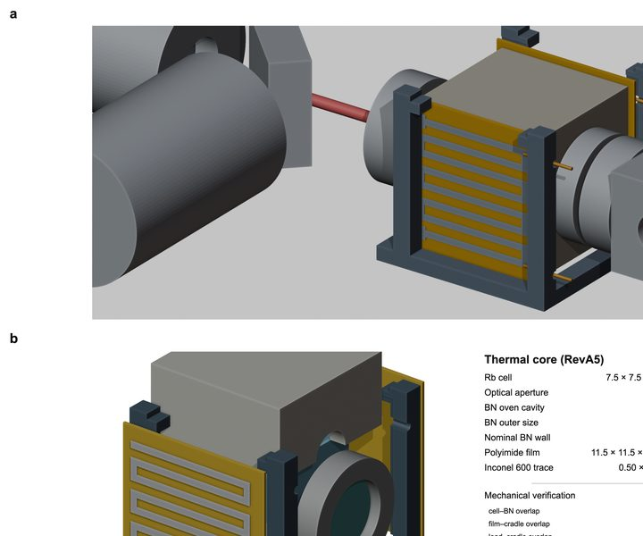
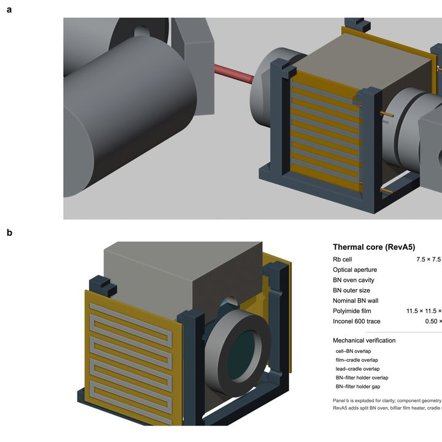
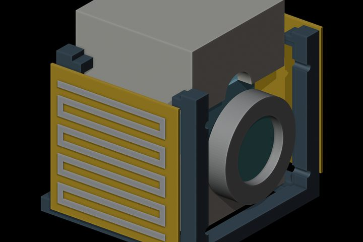
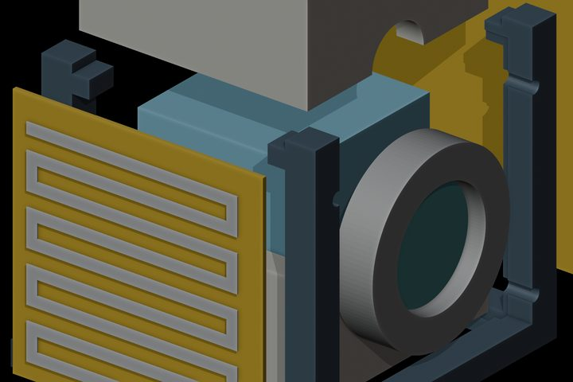
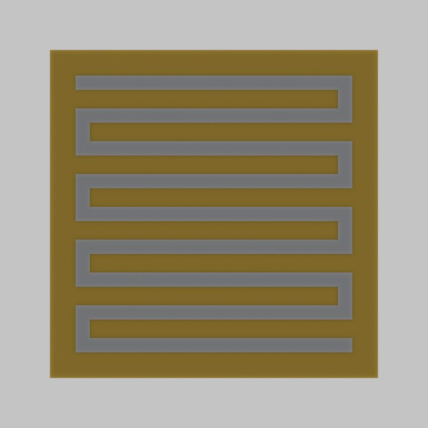
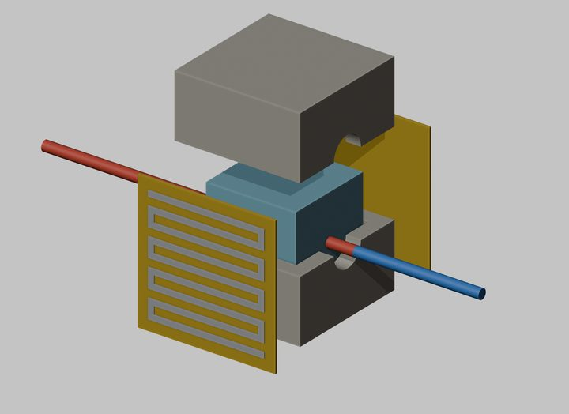
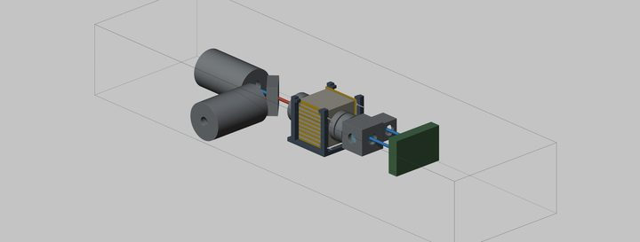
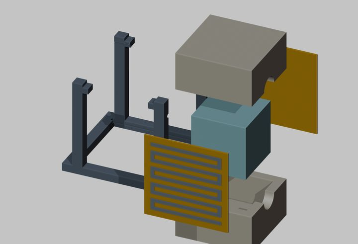
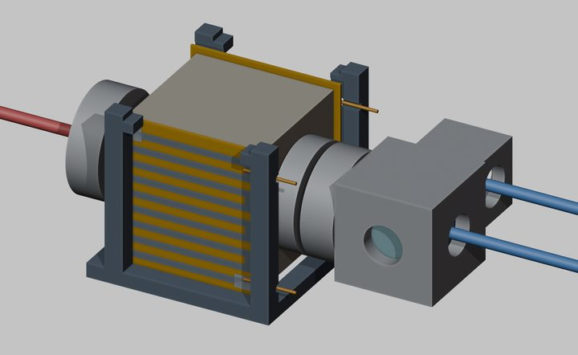
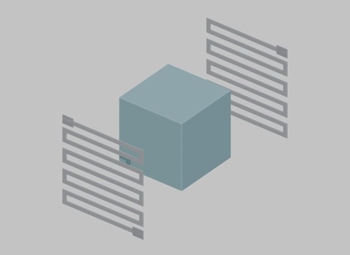

Nature_OPM_RevA5_FIGURE_3600x3000
- full
- 3600x3000 · 4382 KB

Nature_OPM_RevA5_FIGURE.svg
- full
- 3600x3600 · 7298 KB
Nature_OPM_RevA5_FIGURE_preview
- full
- 3600x3600 · 7281 KB

RevA5_Thermal_Exploded_v2
- full
- 2400x1600 · 3508 KB

RevA5_Thermal_Exploded
- full
- 2400x1600 · 4077 KB

Nature_RevA5_panelC_heater_film
- full
- 1600x1600 · 2098 KB

Nature_RevA5_panelB_thermal_exploded
- full
- 2200x1600 · 2827 KB

Nature_RevA5_panelA_overview
- full
- 3300x1250 · 2379 KB

Nature_RevA5_panelC_thermal_exploded
- full
- 2200x1500 · 2711 KB

Nature_RevA5_panelB_thermal_assembled
- full
- 2200x1350 · 2621 KB
RevA5_Nature_panelC_heater_patterns
- full
- 2200x1000 · 1426 KB

RevA5_Nature_panelB_thermal_exploded
- full
- 2200x1600 · 2222 KB